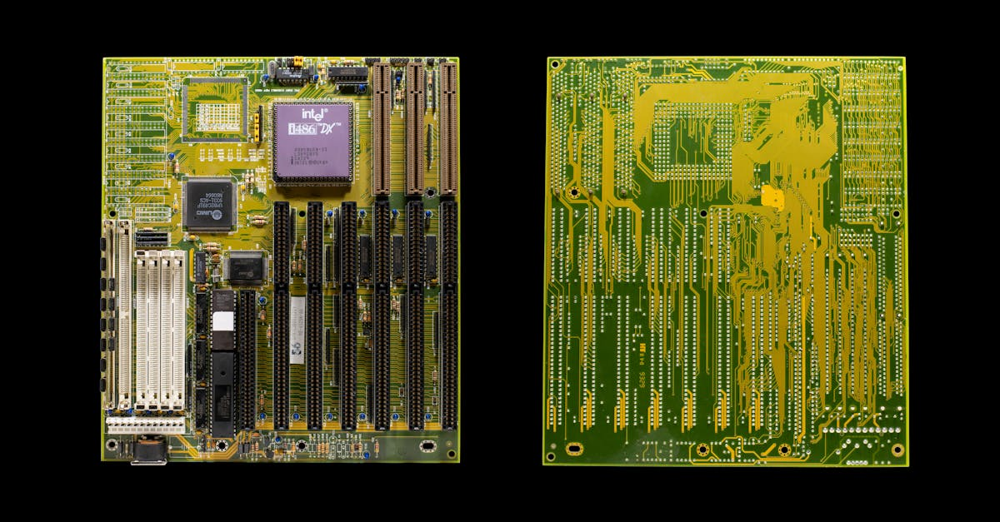
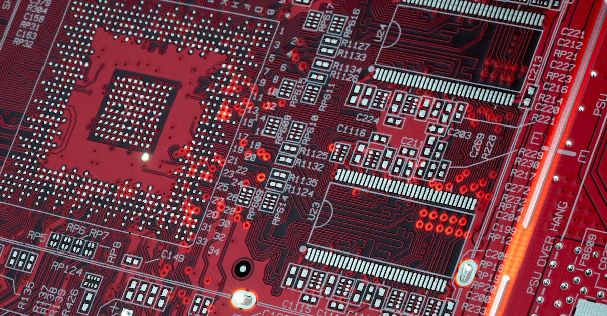

L'Élan Américain pour la Fabrication de Puces : Un Nouveau Chapitre pour Apple
Dans un monde où la technologie évolue à une vitesse fulgurante, les décisions stratégiques des géants comme Apple résonnent bien au-delà de leurs laboratoires de recherche et développement. Récemment, des discussions exploratoires ont émergé, suggérant qu'Apple pourrait envisager de confier la production de ses processeurs principaux à des partenaires américains, notamment Intel et Samsung. Cette potentielle diversification marque une étape significative, s'éloignant de sa dépendance historique envers Taiwan Semiconductor Manufacturing Co. (TSMC), son partenaire de longue date. Les motivations derrière ce mouvement sont multiples et complexes, mêlant impératifs géopolitiques, volonté de sécurisation des chaînes d'approvisionnement, et peut-être même, une vision à long terme intégrant l'intelligence artificielle dans le processus de fabrication lui-même. L'idée de relocaliser une partie de cette production ultra-sensible sur le sol américain n'est pas nouvelle, mais les avancées dans le domaine des semi-conducteurs, et l'importance croissante de l'IA dans la conception et la fabrication, lui confèrent une nouvelle urgence et une pertinence accrue. Pour les investisseurs et les observateurs du marché, cette potentielle réorganisation des forces en présence dans la fabrication des puces soulève des questions fondamentales sur l'avenir de l'industrie, la compétitivité des acteurs, et les opportunités émergentes, notamment dans le secteur de l'épargne intelligente et de l'investissement automatisé. Comprendre les rouages de ces décisions stratégiques est essentiel pour anticiper les tendances futures.
👉 À lire : Apple, Trump et l'IA : Leçons pour votre épargne

Pourquoi Intel et Samsung ? Les Défis de la Production de Puces Avancées
Le choix d'Intel et de Samsung comme potentiels partenaires pour la fabrication des puces d'Apple n'est pas anodin. Intel, bien que confronté à des défis ces dernières années, possède une expertise historique et une infrastructure considérable aux États-Unis. Sa capacité à produire des puces à grande échelle est indéniable, même si elle a été mise à l'épreuve par la concurrence de TSMC et Samsung dans les nœuds de gravure les plus avancés. Pour Apple, faire appel à Intel pourrait signifier une opportunisation de diversifier ses risques géopolitiques, tout en soutenant une relocalisation industrielle prônée par le gouvernement américain. Samsung, quant à lui, est un concurrent direct d'Apple dans le domaine des smartphones et autres appareils électroniques, mais c'est aussi l'un des seuls fabricants au monde capables de rivaliser avec TSMC sur les technologies de gravure les plus fines, essentielles pour les processeurs de pointe des iPhone et des Mac. L'intégration de l'intelligence artificielle dans les processus de fabrication est une préoccupation majeure pour ces entreprises. Les usines modernes de semi-conducteurs sont déjà des environnements hautement automatisés où l'IA joue un rôle dans le contrôle qualité, l'optimisation des rendements et la maintenance prédictive. Apple, en tant qu'utilisateur intensif de puces performantes, pourrait bénéficier de ces avancées en termes de fiabilité et de performance. Cependant, la transition vers de nouveaux partenaires, surtout pour des composants aussi critiques, n'est jamais simple. Elle implique des transferts de technologie complexes, des audits rigoureux, et une adaptation des chaînes logistiques. La question clé reste : ces partenaires peuvent-ils répondre aux exigences de qualité et de volume d'Apple tout en maîtrisant les technologies de gravure les plus avancées, notamment celles qui seront nécessaires pour les futures générations de puces intégrant des capacités d'IA toujours plus poussées ?
👉 À lire : IA, Défense et Corruption : L'Étrange Affaire Malaisienne
L'IA au Cœur de la Stratégie des Semi-conducteurs : Performance et Optimisation
L'intelligence artificielle n'est plus une simple fonctionnalité ajoutée aux appareils ; elle devient un moteur essentiel de leur conception, de leur fabrication et de leurs performances. Pour Apple, la production de ses puces est intrinsèquement liée à l'IA. Les processeurs qu'elle conçoit, comme la série A pour les iPhones et la série M pour les Macs, sont de plus en plus optimisés pour exécuter des tâches liées à l'IA, que ce soit le traitement d'images, la reconnaissance vocale ou des algorithmes d'apprentissage machine plus complexes. La fabrication de ces puces nécessite elle-même des processus d'une précision extrême, où l'IA joue un rôle croissant. Les systèmes de vision par ordinateur basés sur l'IA inspectent les wafers de silicium à la recherche de défauts microscopiques, les algorithmes d'apprentissage automatique optimisent les paramètres des machines de lithographie pour améliorer les rendements, et les jumeaux numériques, alimentés par l'IA, simulent l'ensemble du processus de fabrication pour identifier les goulots d'étranglement potentiels. Si Apple décide de diversifier sa production, ces partenaires potentiels, Intel et Samsung, devront démontrer non seulement leur capacité à graver des circuits avec la finesse requise, mais aussi leur maîtrise des outils d'IA qui garantissent la qualité et l'efficacité de la production. Pour nous, en tant que consommateurs et investisseurs, cela signifie que les futures générations de puces seront probablement encore plus performantes, plus économes en énergie, et mieux adaptées aux applications d'IA. Cela a des implications directes pour les appareils que nous utilisons, mais aussi pour les outils d'épargne et d'investissement automatisé qui s'appuient sur une puissance de calcul toujours plus grande pour analyser les marchés et prendre des décisions éclairées. L'efficacité de ces agents IA dépendra en partie de la performance des puces sous-jacentes.

Sécurisation des Chaînes d'Approvisionnement : Un Enjeu Géopolitique Majeur
La pandémie de COVID-19 a mis en lumière la fragilité des chaînes d'approvisionnement mondiales, particulièrement dans le secteur des technologies. La concentration de la fabrication de semi-conducteurs avancés à Taïwan, au milieu de tensions géopolitiques croissantes, a poussé de nombreux gouvernements et entreprises à reconsidérer leurs stratégies. Pour Apple, dont les produits sont vendus à l'échelle mondiale et dont la demande est massive, une rupture dans la chaîne d'approvisionnement pourrait avoir des conséquences désastreuses. La diversification vers des partenaires comme Intel et Samsung, avec des sites de production potentiels aux États-Unis, s'inscrit dans cette logique de résilience. Il ne s'agit pas seulement de réduire les coûts ou d'améliorer les performances, mais bien de garantir la continuité des activités face aux incertitudes géopolitiques. Les gouvernements, à l'instar de l'administration américaine avec le CHIPS Act, encouragent activement cette relocalisation en offrant des subventions et des incitations fiscales. L'objectif est de renforcer la souveraineté technologique nationale et de réduire la dépendance vis-à-vis de régions perçues comme potentiellement instables. Pour les entreprises, cela représente un investissement conséquent, mais aussi une opportunité de mieux contrôler leur approvisionnement et de réduire les délais de livraison. Cette tendance à la régionalisation des chaînes de production pourrait avoir des effets d'entraînement sur l'ensemble de l'écosystème technologique, y compris sur les entreprises qui développent des solutions d'épargne et d'investissement automatisé par IA, qui dépendent elles aussi de la disponibilité et de la performance des composants électroniques.
Impact sur l'Épargne Intelligente et l'Investissement Automatisé par IA
Comment ces décisions stratégiques d'Apple, apparemment éloignées de notre quotidien financier, peuvent-elles influencer notre manière d'épargner et d'investir ? La réponse réside dans l'interconnexion de l'écosystème technologique et l'importance croissante de l'intelligence artificielle. Les agents IA, comme celui promu par Epargne IA, nécessitent une puissance de calcul considérable pour analyser en temps réel les données financières, identifier les tendances du marché, et exécuter des stratégies d'investissement sophistiquées. Les puces plus performantes, plus économes en énergie, et potentiellement plus fiables grâce à des processus de fabrication diversifiés et optimisés par IA, sont le socle sur lequel repose l'efficacité de ces outils. Si Apple parvient à sécuriser sa production de puces de pointe, cela pourrait se traduire par une disponibilité accrue de ces composants sur le marché, potentiellement à des prix plus stables. Cela bénéficierait indirectement aux développeurs d'IA, qui pourraient intégrer des algorithmes plus complexes dans leurs solutions d'épargne et d'investissement sans être freinés par des limitations matérielles. De plus, une production plus locale et diversifiée pourrait réduire les délais de mise sur le marché de nouvelles technologies, accélérant ainsi l'innovation dans le domaine de la finance algorithmique. Imaginez un agent IA capable de réagir encore plus rapidement aux fluctuations du marché, grâce à une puce de dernière génération, ou un outil d'épargne qui optimise vos placements avec une précision accrue grâce à des modèles prédictifs plus élaborés. Ces avancées, bien que technologiques, ont un impact direct sur le potentiel de croissance de votre capital et sur la manière dont vous abordez la gestion de vos finances personnelles. L'optimisation de l'épargne et des placements, 24h/24, devient d'autant plus pertinente lorsque les outils sous-jacents sont à la pointe de la technologie.

Les Défis Techniques et Financiers de la Relocalisation
Relocaliser la production de semi-conducteurs avancés aux États-Unis n'est pas une mince affaire. Il s'agit d'un secteur extrêmement capitalistique, où les usines de fabrication (les 'fabs') coûtent des dizaines de milliards de dollars à construire et à équiper. Intel, par exemple, a déjà annoncé des investissements massifs pour étendre ses capacités de production aux États-Unis. Samsung fait de même. Ces investissements sont soutenus par des subventions gouvernementales, mais le retour sur investissement n'est jamais garanti, surtout dans une industrie aussi volatile et compétitive. Le défi technique majeur réside dans la maîtrise des nœuds de gravure les plus avancés. TSMC et Samsung sont actuellement les leaders incontestés dans ce domaine, avec des capacités de production pour des transistors de 3 nanomètres et moins. Intel a pris du retard mais travaille activement à rattraper son concurrent. Pour qu'Apple puisse y confier la production de ses futures puces, ces entreprises devront non seulement atteindre, mais aussi maintenir, cette parité technologique. Cela implique des investissements continus en recherche et développement, ainsi qu'une main-d'œuvre hautement qualifiée, un autre défi pour l'industrie américaine des semi-conducteurs. La question de la rentabilité à long terme se pose également. La production aux États-Unis est généralement plus coûteuse qu'en Asie, en raison des salaires plus élevés et des réglementations environnementales plus strictes. Les entreprises devront trouver des moyens d'optimiser leurs coûts, potentiellement grâce à l'automatisation et à l'IA, pour rester compétitives. Ces complexités rappellent que même les décisions des géants de la tech ont des ramifications économiques profondes, affectant l'ensemble de l'écosystème, y compris ceux qui cherchent à optimiser leurs finances personnelles grâce à des outils intelligents.
La Course à l'Innovation : Puces Spécialisées et IA Embarquée
Au-delà de la simple fabrication, la véritable bataille se joue dans l'innovation. Apple ne cesse de repousser les limites avec ses puces conçues sur mesure, intégrant des unités dédiées au traitement neuronal (Neural Engine) pour accélérer les tâches d'IA. La tendance est clairement à la spécialisation : des puces optimisées pour des fonctions spécifiques, plutôt que des processeurs généralistes. Cette approche permet d'améliorer considérablement les performances tout en réduisant la consommation d'énergie. Les discussions avec Intel et Samsung pourraient également porter sur la fabrication de ces puces spécialisées. Par exemple, Apple pourrait vouloir externaliser la production de certains composants IA, ou de puces destinées à des marchés spécifiques, tout en gardant la production des cœurs principaux en interne ou chez TSMC. L'essor de l'IA générative, capable de créer du texte, des images ou du code, demande une puissance de calcul encore plus phénoménale. Les futures puces devront être capables de gérer ces charges de travail de manière efficace, à la fois dans les centres de données et directement sur les appareils. Les fabricants de puces qui réussiront seront ceux qui pourront non seulement produire en masse, mais aussi co-innover avec des entreprises comme Apple pour développer les architectures de puces de demain. Cette course à l'innovation dans les semi-conducteurs alimente directement les progrès dans des domaines comme l'intelligence artificielle appliquée à la finance. Les algorithmes d'investissement deviennent plus intelligents, plus rapides et plus capables d'anticiper les mouvements du marché, grâce à la puissance de calcul mise à leur disposition. C'est une dynamique qui profite à tous ceux qui cherchent à optimiser leur épargne et leurs placements via des solutions automatisées.
Perspectives d'Avenir : Vers un Écosystème Technologique plus Résilient ?
La diversification potentielle d'Apple dans la fabrication de ses puces aux États-Unis, avec des partenaires comme Intel et Samsung, pourrait marquer le début d'une ère nouvelle pour l'industrie des semi-conducteurs. Si cette stratégie aboutit, elle pourrait conduire à un écosystème technologique plus résilient, moins dépendant d'une seule région géographique. Cela aurait des implications positives pour la stabilité de l'approvisionnement en composants essentiels, non seulement pour Apple, mais aussi potentiellement pour d'autres acteurs de l'industrie. La concurrence accrue entre les fabricants de puces pourrait également stimuler l'innovation et potentiellement modérer les coûts à long terme, bien que les investissements initiaux soient considérables. Pour les observateurs attentifs, cette évolution souligne l'importance stratégique des semi-conducteurs, véritables cerveaux de notre ère numérique. L'intelligence artificielle, omniprésente dans la conception, la fabrication et l'utilisation de ces puces, ne cesse de transformer notre monde. Dans le domaine de la finance, cela se traduit par des outils d'épargne et d'investissement toujours plus performants. Les agents IA, capables d'analyser des volumes massifs de données et d'exécuter des stratégies complexes, gagnent en précision et en efficacité grâce aux avancées matérielles. Penser à optimiser son épargne via une IA 24h/24 devient non seulement une possibilité, mais une stratégie de plus en plus pertinente dans un monde où la technologie évolue au rythme effréné des innovations dans les puces électroniques et l'intelligence artificielle. La résilience de l'écosystème technologique est donc un gage de performance pour les outils financiers intelligents de demain.
Conclusion : L'Intelligence Artificielle, le Fil Rouge de l'Innovation Tech et Financière
L'actualité concernant les discussions d'Apple pour diversifier la production de ses puces aux États-Unis avec Intel et Samsung est bien plus qu'une simple décision d'entreprise. Elle reflète des enjeux géopolitiques majeurs, une course technologique effrénée, et une prise de conscience de la nécessité de sécuriser les chaînes d'approvisionnement. Au cœur de cette dynamique se trouve l'intelligence artificielle, moteur essentiel de l'innovation dans la conception des puces, leur fabrication ultra-précise, et leur utilisation dans des appareils toujours plus intelligents. Pour nous, acteurs du monde de l'épargne et de l'investissement, cette évolution technologique a des implications directes. L'efficacité accrue des puces, la miniaturisation, et l'intégration poussée de l'IA dans le matériel sont autant de facteurs qui améliorent les performances des outils d'investissement automatisé. Les agents IA, capables d'analyser les marchés 24h/24, gagnent en puissance et en pertinence grâce à ces avancées. L'optimisation de votre épargne et de vos placements, rendue possible par des algorithmes sophistiqués tournant sur des puces de pointe, devient une stratégie de plus en plus accessible et efficace. En fin de compte, que ce soit dans les usines de semi-conducteurs d'Intel ou de Samsung, ou dans les algorithmes d'un agent IA gérant votre portefeuille, l'intelligence artificielle est le fil conducteur qui tisse le lien entre l'innovation technologique et la performance financière. Comprendre ces connexions est la clé pour naviguer avec succès dans le paysage financier de demain.